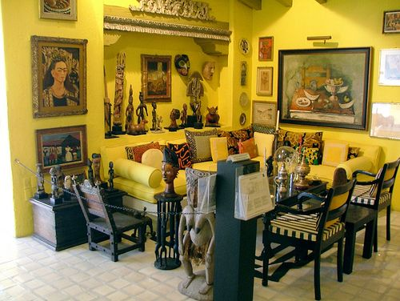
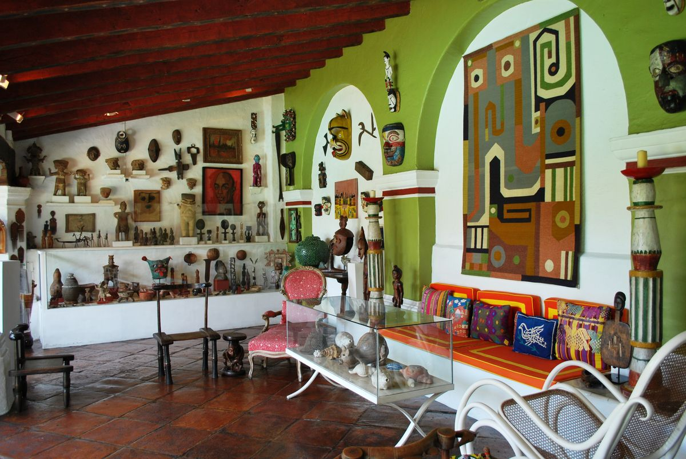

📸 Galería de Imágenes


🏛️ Historia y Reseña Completa
La Casa Museo Robert Brady ocupa una sección de lo que originalmente fue el exconvento franciscano de la Asunción, un conjunto monumental del siglo XVI. El inmueble fue adquirido en 1962 por el refinado artista y coleccionista norteamericano Robert Brady, quien pasó más de dos décadas restaurando la propiedad y transformándola en su hogar privado. Brady diseñó cada rincón con un sentido estético único, integrando colores intensos y acabados tradicionales.
Hoy en día, la casa se conserva intacta como un extraordinario museo que resguarda una colección privada de aproximadamente 1,300 piezas de arte y artesanías provenientes de todo el mundo. Al recorrer sus habitaciones, patios y jardines, se pueden apreciar desde muebles coloniales y máquinas ceremoniales hasta valiosas pinturas de grandes artistas como Frida Kahlo, Diego Rivera, Rufino Tamayo, María Izquierdo y el propio Robert Brady, conviviendo en una armoniosa museografía ecléctica.